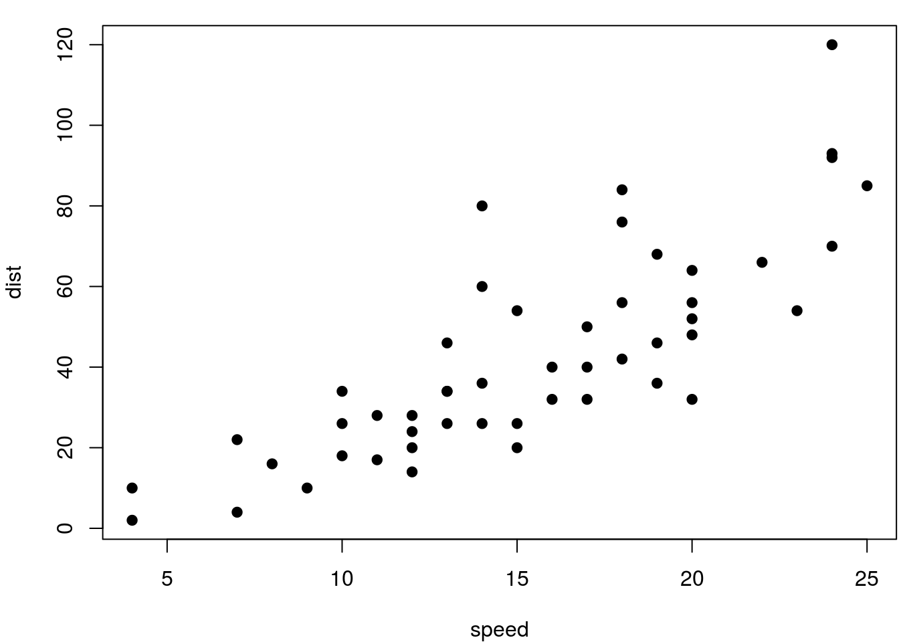

Introduction
Now unplug your Internet cable, and start doing some serious work.
We have a nice figure in Figure ., and also a table in Table ..
par(mar = c(4, 4, 1, .1))
plot(cars, pch = 19)

FIGURE .: Hello World!
knitr::kable(
head(iris), caption = 'The boring iris data.',
booktabs = TRUE
)| Sepal.Length | Sepal.Width | Petal.Length | Petal.Width | Species |
|---|---|---|---|---|
| 5.1 | 3.5 | 1.4 | 0.2 | setosa |
| 4.9 | 3.0 | 1.4 | 0.2 | setosa |
| 4.7 | 3.2 | 1.3 | 0.2 | setosa |
| 4.6 | 3.1 | 1.5 | 0.2 | setosa |
| 5.0 | 3.6 | 1.4 | 0.2 | setosa |
| 5.4 | 3.9 | 1.7 | 0.4 | setosa |
More chapters to come in 02-returns.Rmd, 03-prices-to-returns.Rmd, …